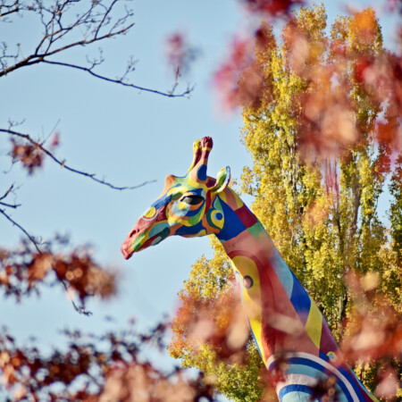

|  |
Київський зоопарк заснований у 1907 році. Зоопарк – це природоохоронна, науково-дослідна та культурно-освітня установа. Протягом року фахівці зоопарку проводять цікаві науковопросвітницькі акції, оглядові та тематичні екскурсії на казковому потязі, а також акції під час канікул. Відзначаються міжнародні, державні, муніципальні, народні свята і дні, присвячені окремим групам тварин – мешканцям Київського зоопарку. На базі Київського зоопарку активно діє гурток юннатів, в якому діти отримують знання з біології, систематики, зоогеографії наземних і водних тварин, знайомляться з колекцією тварин Київзоо, яка налічує близько 300 видів, доглядають за ними, вивчають їх поведінку та цикли розвитку, основи природоохоронної діяльності України та світу. |
Вартість вхідного квитка, придбаного у квитковій касі – 250 грн (дорослий), 150 грн (дитячий) Вартість вхідного квитка, придбаного онлайн – 230 грн (дорослий), 130 грн (дитячий)
Подорож нашим зоопарком